무선설비산업기사 (2019-06-29 기출문제)
1과목: 디지털 전자회로
1. 다음 중 전압, 전류, 저항의 보조단위를 정리한 것으로 맞지 않는 것은?
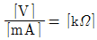
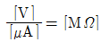
- [mA]∙[kΩ]=[V]
- [μA]∙[MΩ]=[mV]
(정답률: 81%)

2. 다음 중 브리지 전파 정류회로의 특징으로 틀린 것은?
- 맥동(Ripple) 주파수는 전원주파수의 3배이다.
- 최대역전압(PIV)은 전원전압의 최대값[Vm]이다.
- 변압기의 직류자화가 없어 변압기의 이용률이 높다.
- 전원변압기의 2차측 권선의 중간탭이 불필요하며, 권선도 반이면 된다.
(정답률: 73%)
3. 다음 중 중간 탭형 전파 정류와 비교했을 때, 브리지형 전파 정류회로의 특징이 아닌 것은?
- 고압 정류회로에 적합하다.
- 변압기 자기 포화 현상이 거의 없다.
- 높은 출력 전압을 얻을 수 있다.
- 소형 변압기를 전혀 사용할 수 없다.
(정답률: 84%)
4. FET(Field Effect Transistor)의 특성으로 옳은 것은?
- 쌍극성 소자이다.
- 입력신호 전압을 게이트에 인가해서 채널 전류를 제어한다.
- BJT보다 저입력 임피던스를 갖는다.
- P채널 FET에 흐르는 전류는 전자의 확산현상에 의해 발생한다.
(정답률: 70%)
5. 다음 그림과 같은 전류궤환 Bias회로에서 IB는 약 얼마인가?
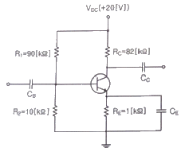
- 1.29[㎂]
- 12.9[㎂]
- 2.91[㎂]
- 29.1[㎂]
(정답률: 68%)
6. 트랜지스터의 바이어스회로 방식 중에서 안정도가 가장 높은 것은?
- 고정 바이어스
- 전압궤환 바이어스
- 전류궤환 바이어스
- 전압전류궤환 바이어스
(정답률: 83%)
7. 0.1[V]의 교류 입력이 10[V]로 증폭되었을 때, 증폭도는 몇 [dB]인가?
- 10[dB]
- 20[dB]
- 30[dB]
- 40[dB]
(정답률: 64%)
8. 다음 중 비정현파 발진기가 아닌 것은?
- 멀티바이브레이터
- 피어스 BE 발진기
- 블로킹 발진기
- 톱니파 발진기
(정답률: 71%)
9. 다음 중 CR형 발진기에 대한 설명으로 틀린 것은?
- LC동조회로를 사용하지 않는다.
- 발진주파수는 CR의 시정수에 의해 정해진다.
- C와 R을 사용하여 부궤환에 의해 발진한다.
- 저주파 발진 특성이 우수하다.
(정답률: 78%)
10. 다음 중 발진 주파수가 변하는 주요 요인이 아닌 것은?
- 전원 변압의 변동
- 주위의 온도 변화
- 부하의 변동
- 대역폭의 변화
(정답률: 67%)
11. 다음 중 교류 신호를 구성하는 기본적인 요소가 아닌 것은?
- 진폭
- 주파수
- 증폭도
- 위상
(정답률: 81%)
12. 다음 중 아날로그 진폭 변조 방식의 종류가 아닌 것은?
- DSB-LC(DSB-TC)
- DSB-SC
- FM
- SSB
(정답률: 82%)
13. 다음 중 펄스변조 방식이 아닌 것은?
- PCM
- PWM
- PPM
- PM
(정답률: 81%)
14. 동일 조건의 환경에서 PSK, DPSK 및 비동기 FSK 변조방식에 대한 각각의 오류확률에 따른 신호대 잡음비의 품질이 우수한 순서대로 나열한 것 중 옳은 것은?
- PSK > DPSK > FSK
- DPSK > PSK > FSK
- FSK > PSK > DPSK
- FSK > DPSK > PSK
(정답률: 67%)
15. 트랜지스터의 스위칭 시간에서 Turn-on 시간을 의미하는 것은?
- Fail Time
- Rise Time + Delay Time
- Rise Time
- Fail Time + Storage Time
(정답률: 84%)
16. 쌍안정 멀티바이브레이터 회로에서 저항에 병렬로 접속된 콘덴서의 주요 목적은?
- 증폭도를 높이기 위해
- 스위칭 속도를 높이기 위해
- 베이스 전위를 일정하게 하기 위해
- 이미터 전위를 일정하게 하기 위해
(정답률: 85%)
17. 8진수 67을 16진수로 바르게 변환한 것은?
- 43
- 37
- 55
- 34
(정답률: 77%)
18. J-K 플립플롭을 이용하여 T 플립플롭을 구현한 것으로 옳은 것은?
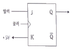
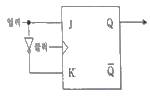
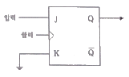
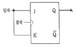
(정답률: 71%)
19. 다음 중 RS 플립플롭으로 구현된 D플립플롭 회로는?
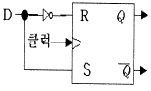
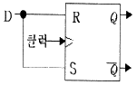
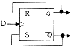
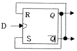
(정답률: 78%)
20. 다음 중 메모리에 대한 설명으로 틀린 것은?
- SRAM(Static RAM)과 DRAM(Dynamic RAM)은 전원이 차단되면 데이터가 소멸된다.
- DRAM은 SRAM에 비해 데이터 저장 용량을 높이는데 용이하다.
- SRAM은 DRAM에 비해 고속이다.
- SRAM과 DRAM은 일정 주기마다 재충전이 필요하다.
(정답률: 74%)
2과목: 무선통신 기기
21. AM 수신기에서 중간주파수 선정 시 고려해야 할 사항으로 가장 관련이 적은 것은?
- 인입현상
- 감도 및 안정도
- 단일조정
- 초고주파의 영향
(정답률: 72%)
22. 다음 중 슈퍼헤테로다인 수신기에서 BFO(Beat Frequency Oscillator)를 사용하는 목적은?
- F1A 및 A2A 전파를 가청 주파수로 수신하기 위함
- A1A 전파를 가청 주파수로 수신하기 위함
- A3E 전파를 가청 주파수로 수신하기 위함
- 중간 주파수를 정확하게 맞추기 위함
(정답률: 68%)
23. 다음 중 AM송신기에서 반송파 발진기로 가장 많이 사용되는 발진기는?
- RC 발진기
- 수정 및 LC 발진기
- SAW 발진기
- 유전체 공진기 발진기
(정답률: 74%)
24. 다음 중 AM송신기의 구성 요소가 아닌 것은?
- 발진회로
- 변조회로
- 검파회로
- 증폭회로
(정답률: 79%)
25. DSB 통신 방식과 비교한 SSB 송신기의 장점이 아닌 것은?
- 점유주파수대역폭이 1/2로 축소된다.
- 적은 송신 전력으로 통신이 가능하다.
- 회로 구성이 간단하다.
- 신호대 잡음비가 개선된다.
(정답률: 77%)
26. FM 복조에 PLL 회로가 많이 사용되고 있다. 다음 중 PLL의 기본적인 구성 요소가 아닌 것은?
- 전압제어발진기(VCO) 회로
- 위상 비교기(PC) 회로
- 샘플링(Sampling) 회로
- 저역통과필터(LPF) 회로
(정답률: 71%)
27. 다음 디지털 변조 방식에서 주파수 효율이 높고 고속 통신용으로 가장 적합한 방식은?
- 펄스폭 편이 변조 방식
- 진폭 편이 변조 방식
- 주파수 편이 변조 방식
- 위상 편이 변조 방식
(정답률: 65%)
28. 다음 중 마이크로파 통신에 대한 설명으로 틀린 것은?
- 안테나 이득을 크게할 수 있다.
- 외부잡음의 영향에 약하다.
- 광대역 전송이 가능하다.
- 주로 가시거리 통신이 행해진다.
(정답률: 78%)
29. 다음 중 페이딩(Fading) 감소를 위한 다이버시티 방식이 아닌 것은?
- 레이크 다이버시티
- 공간 다이버시티
- 시간 다이버시티
- 주파수 다이버시티
(정답률: 80%)
30. 다음 그림은 통신위성 중계기의 일반적인 구성도이다. 빈칸 (A)에 가장 적합한 것은?
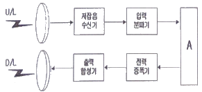
- 중간주파 증폭기
- 주파수 변환기
- 검파기
- 변 ∙복조기
(정답률: 76%)
31. 다음 중 이동통신에서 요구되는 특징에 대한 설명으로 틀린 것은?
- 단말기가 이동하므로 교환기와의 연결 경로 선택 기능이 필요하다.
- 사용 주파수대가 한정되어 있으므로 주파수를 효율적으로 이용하여 가입자 수용 용량을 감소시키는 기술이 필요하다.
- 무선통신 방식이므로 페이딩을 극복하는 방식과 제어용 프로토콜이 필요하다.
- 회선용 다수의 이용자가 공용하므로 호출과 통화료 부과 기술이 일반전화와 다르다.
(정답률: 80%)
32. 다음 중 광대역 멀티미디어 서비스를 언제 어디서나 이용할 수 있도록 하는 융합 통신망은?(오류 신고가 접수된 문제입니다. 반드시 정답과 해설을 확인하시기 바랍니다.)
- PSTN
- ISDN
- BcN
- IoT
(정답률: 66%)
33. 다음 그림은 이동통신시스템의 계통 블록다이어그램이다. (ㄱ)과 (ㄴ)에 각각 들어가야 할 용어로 옳은 것은?
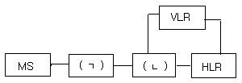
- (ㄱ) BTS, (ㄴ) MSC
- (ㄱ) MSC, (ㄴ) BTS
- (ㄱ) S-G/W, (ㄴ) MSC
- (ㄱ) MSC, (ㄴ) S-G/W
(정답률: 77%)
34. 연축전지에서 AH(암페어시)가 나타내는 것은?
- 용량
- 사용가능시간
- 충전전류
- 방전전류
(정답률: 81%)
35. 다음 중 충전기 충전 방식의 종류가 아닌 것은?
- 단순 충전
- 평상 충전
- 균등 충전
- 부동 충전
(정답률: 80%)
36. 다음 중 인버터의 유형을 구분하는 요소에 해당 하지 않는 것은?
- 전원의 형태
- 전원의 구성 방식
- 제어 방식
- 출력 상수
(정답률: 60%)
37. 다음 통신계통도에 대한 출력점의 신호레벨은 얼마인가?
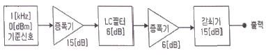
- -5[dBm]
- 2[dBm]
- 0[dBm]
- 5[dBm]
(정답률: 79%)
38. 다음 중 FM 송신기의 전력 측정 방법으로 적합하지 않은 것은?
- 열량계에 의한 방법
- C-M형 전력계에 의한 방법
- 수부하계에 의한 방법
- 볼로미터 브리지에 의한 방법
(정답률: 74%)
39. 수신기의 종합 전압이득을 구하기 위하여 수신기의 출력을 50[mW]로 조정하고 출력전압이 6[V], 입력전압이 60[uV]였다면 이 수신기의 종합전압이득은?
- 1[dB]
- 10[dB]
- 100[dB]
- 1,000[dB]
(정답률: 72%)
40. 상온에서 만충전 시 전해액의 비중이 1.28, 방전종지 시 비중이 1.02이고 용량이 100[AH]인 축전지에서 현재 상태의 비중이 1.25일 경우, 현재 방전량은 약 얼마인가?
- 9.9[AH]
- 10.8[AH]
- 11.5[AH]
- 12.1[AH]
(정답률: 69%)
3과목: 안테나 개론
41. 다음 중 전파의 성질에 대한 설명으로 옳은 것은?
- 전파는 종파이다.
- 주파수는 파장의 크기에 비례한다.
- 전파의 속도는 유전율이 클수록 빨라진다.
- 편파성을 갖는다.
(정답률: 67%)
42. 포인팅 정리에 관한 식에서
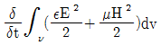
에 대한 설명으로 옳은 것은?- 체적 내의 전계 및 자계에 저축되는 전체에너지이다.
- 체적 내의 발생되는 정(+)값을 갖는 전력원이다.
- 발산되는 전계와 자계의 증분값이다.
- 체적 외부로 흘러 나가는 유출전력량이다.
(정답률: 70%)
43. 8진 PSK에서 반송파 간 위상 차는?
- π
- π/2
- π/4
- π/8
(정답률: 67%)
44. 다음 중 정재파비(VSMR)에 대한 설명으로 틀린 것은?
- 전압 정재파비는 정재파의 최대 전압과 최소 전압의 비로 정의된다.
- 전류 정재파비는 정재파의 최대 전류와 최소 전류의 비로 정의된다.
- 선로 상에서 근접한 최대치와 다음 최대치의 간격은 반파장거리이다.
- 임피던스가 완전히 정합된 경우 정재파비 S=0의 관계에 있다.
(정답률: 79%)
45. 다음 중 스미스(Smith) 차트의 궤적에 대한 설명으로 틀린 것은?
- 어드미턴스 차트의 원을 따라 중심선 위쪽에서 시계 반대 방향으로 회전하면 회로 상에 병렬 인덕터가 삽입된 경우이다.
- 임피던스 차트의 원을 따라 중심선 위쪽에서 시계 방향으로 회전 이동하면 회로 상에 직렬 인덕터가 삽입된 경우이다.
- 어드미턴스 차트 원을 따라 중심선 아래에서 시계 방향으로 회전 이동하면 병렬 커패시터가 삽입된 경우이다.
- 임피던스가 “0”에 가까울수록 회로는 거의 Open상태로 되어 전류가 잘 흐를 수 있다.
(정답률: 80%)
46. 동축케이블의 내부 도체를 제거한 것과 같이 고역필터로서 작용을 하며, 고주파 급전과정에서 방사손실이 거의 없는 특성을 갖는 급전선은?
- 도파관
- 마이크로 스트립
- 공동 공진기
- 평행 5선식 급전선
(정답률: 82%)
47. 도파관에 대한 설명으로 틀린 것은?
- 원형 도파관에서는 TE11모드가 기본모드이다.
- 도파관에는 각 모드에 대응하는 차단 파장이 존재하지 않는다.
- 도파관용 창은 도파관용 필터 공동 공진기의 출력을 얻는데 사용된다.
- 도파관내의 임피던스는 슬롯이 있는 도체판을 관내에 삽입하여 전자계 분포를 변화시킴으로써 변경이 가능하다.
(정답률: 71%)
48. 도파관의 임피던스 정합에 쓰이는 소자로 입사파는 감쇠없이 진행하지만 반사파는 큰 감쇠로 인하여 전력 흡수되는 비가역 회로 소자를 무엇이라고 하는가?
- 아이솔레이터(Isolator)
- 공동공진기(Cavity Resonator)
- 방향성결합기
- 서큘레이터(Circulator)
(정답률: 83%)
49. 기준 안테나로 등방성 안테나를 사용하여 임의의 안테나 이득을 측정했을 때의 이득을 무엇이라고 하는가?
- 절대 이득
- 상대 이득
- 지상 이득
- 표준 이득
(정답률: 72%)
50. 임의 안테나 A, B에 같은 전력을 공급하였다. 이때 최대 방사방향으로 임의 점의 전계강도는 각각 1,000[㎶/m], 100[㎶/m]이었다. 다음 중 두 안테나 이득의 비는 얼마인가?
- 10[dB]
- 20[dB]
- 30[dB]
- 40[dB]
(정답률: 65%)
51. 다음 중 안테나의 배열(Array)에 관한 설명으로 틀린 것은?
- 배열 축 방향으로 지향성이 나타나면 End-fire Array이다.
- 배열의 간격과 급전하는 신호의 위상은 서로 관련이 있다.
- 합성 지향성은 소자 및 배열의 지향성 적(積)의 원리로 예측할 수 있다.
- 배열의 간격은 1/4 파장이어야 하고 반드시 동위 상으로 급전하여야 한다.
(정답률: 72%)
52. 다음 중 안테나의 광대역성을 갖도록 하는 방법으로 틀린 것은?
- 안테나의 Q를 작게 한다.
- 상호 임피던스의 특성을 이용한다.
- 진행파 여진형의 소자를 이용한다.
- 안테나 도체의 직경을 좁게한다.
(정답률: 78%)
53. 네트워크 분석기(Network Analyzer)를 이용하여 안테나의 반사 손실을 측정할 경우, 일반적으로 약 몇 [dB]이하를 기준으로 안테나 대역폭을 정하는가?
- 0[dB]이하
- -10[dB]이하
- -20[dB]이하
- -30[dB]이하
(정답률: 60%)
54. 지하 50[cm] ~ 100[cm] 정도에 직경 2.9[mm] 정도의 동선을 최소한 안테나 높이와 같은 길이로 여러 개의 줄을 지선망 형태로 매설하는 안테나 접지방식은?
- 심굴접지
- 방사상접지
- 다중접지
- 가상접지
(정답률: 69%)
55. 다음 중 전파투시도(지형단면도)에 대한 설명으로 틀린 것은?
- 전파통로 상에서 수평방향의 장애물을 살펴볼 때 편리하다.
- 전파통로를 나타내는 지구 단면도로 Profile Map이라고도 한다.
- 등가지구 반경계수 K를 고려하여 작성해야 한다.
- 전파통로를 직선으로 취급할 수 있게 된다.
(정답률: 70%)
56. 송신 안테나의 높이가 16[m], 수신 안테나 높이가 25[m]일 때, 초단파의 직접파 최대 가시거리는 얼마인가?
- 16.99[km]
- 26.99[km]
- 36.99[km]
- 46.99[km]
(정답률: 73%)
57. 다음 중 지표파에 관한 설명으로 틀린 것은?
- 대지가 완전 도체라고 할 때, 전계 강도는 수치거리 또는 감쇠계수로 표현할 수 있다.
- 유전율이 작을수록 감쇠가 적어진다.
- 지표에 가까운 곳에서는 전파의 진행 속도가 늦어진다.
- 수평편파 쪽이 감쇠가 적다.
(정답률: 69%)
58. 다음 중 장파, 중파대에서 지표파에 의해 전파되는 전파의 감쇠가 가장 적은 매질은?
- 해수
- 사막
- 습지
- 건지
(정답률: 86%)
59. 다음 중 대류권 전파의 감쇠에 해당되지 않는 것은?
- 강우에 의한 감쇠
- 구름, 안개에 의한 감쇠
- 바람에 의한 감쇠
- 대기에 의한 감쇠
(정답률: 86%)
60. E층의 임계주파수가 4[MHz], 높이가 100[km]이고, 송∙수신점 간의 거리가 200[km]이다. 이때 MUF는?
- 약 4.7[MHz]
- 약 5.7[MHz]
- 약 6.7[MHz]
- 약 7.7[MHz]
(정답률: 55%)
4과목: 전자계산기 일반 및 무선설비기준
61. 어떤 시프트 레지스터의 내용을 우측으로 3번 시프트하면 원래의 데이터 값에서 어떤 변화가 일어나는가?
- 원래 데이터 값의 8배
- 원래 데이터 값의 1/8배
- 원래 데이터 값의 3배
- 원래 데이터 값의 1/3배
(정답률: 77%)
62. 다음 중 10진수 13과 같지 않은 것은?
- 2진수 1101
- 5진수 23
- 8진수 15
- 16진수 C
(정답률: 80%)
63. 다음 중 정보의 단위가 작은 것에서 큰 순으로 바르게 나열된 것은?
- 파일, 레코드, 필드, 문자, 데이터베이스
- 워드, 필드, 레코드, 파일, 데이터베이스
- 워드, 레코드, 파일, 필드, 데이터베이스
- 레코드, 필드, 파일, 문자, 데이터베이스
(정답률: 76%)
64. 다음 중 ASCII 코드에 대한 설명으로 옳은 것은?
- 자료를 전송할 때 8비트 중 1비트는 패리티 비트로 사용하고 나머지 7비트로 27=128가지 문자를 표현할 수 있는 코드이다.
- 영자나 특수 문자까지 확대하기 위해 6비트를 사용하며, 2비트는 Zone 비트이고, 4비트는 수치비트로서 26=64가지 종류의 문자를 표현할 수 있는 코드이다.
- 8비트를 사용하여 28=256가지의 넓은 범위의 문자를 표현할 수 있어 현재 범용으로 사용되는 코드이다.
- 순 2진수 표현 형태로 문자를 나타낼 수 있으며, 자리수마다 가중치로서 계산하여 사용하는 코드이다.
(정답률: 72%)
65. 다음 중 운영체제 제어 프로그램에 속하는 것으로 알맞게 구성된 것은?
- 감시 관리 프로그램, 데스크 관리 프로그램, 시스템 편집 프로그램
- 데스크 관리 프로그램, 데이터 관리 프로그램, 작업 관리 프로그램
- 작업 관리 프로그램, 언어처리 프로그램, 유틸리티 프로그램
- 유틸리티 프로그램, 언어처리 프로그램, 시스템 편집 프로그램
(정답률: 73%)
66. 다음 보기는 시스템 소프트웨어 구성 프로그램 중 어떤 것을 설명하고 있는가?
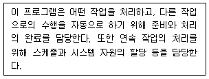
- 작업제어 프로그램
- 감시 프로그램
- 언어번역 프로그램
- 서비스 프로그램
(정답률: 83%)
67. 다음 중 일반 컴퓨터 형태가 아닌 주로 회로 기판 형태의 반도체 기억 소자에 응용 프로그램을 탑재하여 컴퓨터의 기능을 수행하는 시스템은?
- 임베디드 시스템
- 분산처리 시스템
- 병렬 처리 시스템
- 멀티 프로세싱 시스템
(정답률: 81%)
68. 하나의 프로세서 안에서 여러 개의 프로그램을 처리하는 방식을 무엇이라고 하는가?
- Multi Processing
- Multi Programming
- Distributed Processing
- Real Time Processing
(정답률: 71%)
69. 다음 Processing Scheduling 정책 중 현재 작업 중인 프로세스를 중단시키고, 남은 시간이 가장 짧은 JOB을 우선적으로 처리하는 방식은?
- FIFO
- RR
- HRN
- SRT
(정답률: 79%)
70. 다음 중 직접 어드레스 지정 방식으로 Jump 명령을 올바르게 표현한 것은?
- jump a, 100
- jump 100
- jump pc
- jump
(정답률: 77%)
71. 다음 중 과학기술정보통신부장관이 전파진흥기본계획에 포함하여야 할 사항이 아닌 것은?
- 전파방송산업육성의 기본방향
- 전파이용질서의 확립
- 전파정보의 공유에 관한 사항
- 전파관련 표준화에 관한 사항
(정답률: 67%)
72. 다음 중 과학기술정보통신부장관이 주파수할당을 하고자 할 때, 공고사항이 아닌 것은?
- 국제주파수등록위원회의 기술기준
- 할당대상 주파수 및 대역폭
- 주파수 할당 대가
- 주파수용도 및 기술방식에 관한 사항
(정답률: 66%)
73. 과학기술정보통신부장관이 주파수할당을 하고자 하는 경우, 주파수 할당을 하는 날로부터 얼마 전까지 할당관련 공고를 하여야 하는가?
- 15일 전
- 1월 전
- 3월 전
- 6월 전
(정답률: 72%)
74. 다음 중 주파수 분배 시 고려하여야 할 사항이 아닌 것은?
- 전파이용 기술의 발전추세
- 국내의 주파수 사용 동향
- 주파수의 이용현황 등 국내의 주파수 이용여건
- 전파를 이용하는 서비스에 대한 수요
(정답률: 60%)
75. 다음 중, 고시대상 무선국을 허가한 경우에 고시사항이 아닌 것은?
- 무선국의 명칭 및 종별과 무선설비의 설치장소
- 무선설비의 발주자의 성명 또는 명칭
- 허가 년∙월∙일 및 허가번호
- 주파수, 전파의 형식, 점유주파수대폭 및 안테나공급전력
(정답률: 76%)
76. 아마추어국의 개설조건 중 고정 아마추어국의 경우, 안테나공급전력은 몇 와트 이하이어야 하는가?
- 1,000와트
- 500와트
- 200와트
- 100와트
(정답률: 61%)
77. 다음 중 무선설비 안전시설기준에 관련되 사항으로 틀린 것은?
- ‘기본모델’은 전기적인 회로∙구조∙성능이 동일하고 기능이 유사한 제품군 중 표본이 되는 기자재이다.
- ‘무선 송∙수신용 부품’은 차폐된 함체 또는 칩에 내장된 무선 주파수의 발진, 변조 또는 복조, 증폭부 등과 안테나로 구성된다.
- ‘사후관리’는 적합성평가를 받은 기자재가 적합성평가기준대로 제조∙수입 또는 판매되고 있는지 조사 또는 시험하는 것이다.
- ‘디지털 장치’는 7[kHz] 이상의 타이밍 신호 또는 펄스를 발생시키는 회로가 내장되어 있으며, 디지털 신호로 동작되는 기자재이다.
(정답률: 66%)
78. 지상파 디지털 텔레비전 방송국의 송신설비에서 안테나공급전력의 허용편차는 상한과 하한에서 각각 몇 [%]씩 허용되는가? (상한 허용치, 하한 허용치)
- 5[%], 10[%]
- 10[%], 20[%]
- 5[%], 5[%]
- 20[%], 10[%]
(정답률: 70%)
79. 비상국 전원의 조건 중 축전지를 사용하는 경우 상시 몇 시간 이상 운용할 수 있어야 하는가?
- 8시간
- 12시간
- 16시간
- 24시간
(정답률: 82%)
80. 다음 괄호 안에 들어간 내용으로 맞는 것은?
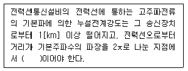
- 100[㎶/m] 이하
- 300[㎶/m] 이하
- 500[㎶/m] 이하
- 700[㎶/m] 이하
(정답률: 63%)
이유는 전압은 전류와 저항의 곱으로 나타낼 수 있기 때문이다. 즉, V = I x R 이다. 따라서 [mA]∙[kΩ]=[V]는 전압을 나타내는 식이다.
하지만 "[μA]∙[MΩ]=[mV]"도 전압을 나타내는 식이다. 단위를 보면 [μA]는 전류를 나타내는 단위이고, [MΩ]는 저항을 나타내는 단위이다. 따라서 [μA]∙[MΩ]는 전류와 저항의 곱으로 나타낸 전압을 나타내는 단위이다. 이를 계산하면 [μA]∙[MΩ] = [V] / 1000 이므로 [μA]∙[MΩ]=[mV]가 성립한다.